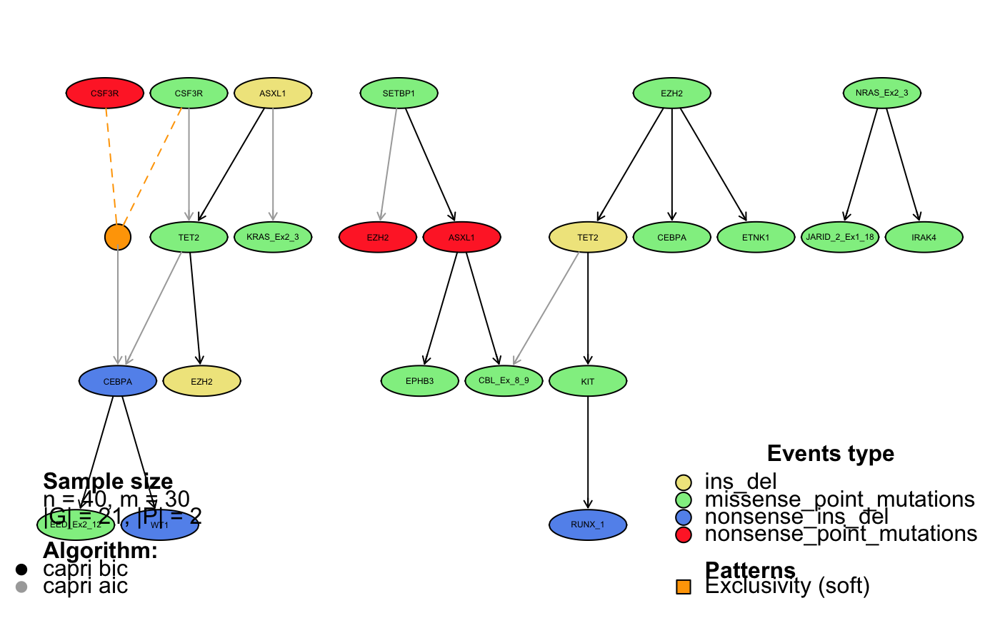

Plots a progression model from a recostructed dataset. For details and examples regarding the visualization of an inferred model, we refer to the Vignette Section 7.
tronco.plot(
x,
models = names(x$model),
fontsize = NA,
height = 2,
width = 3,
height.logic = 1,
pf = FALSE,
disconnected = FALSE,
scale.nodes = NA,
title = as.description(x),
confidence = NA,
p.min = 0.05,
legend = TRUE,
legend.cex = 1,
edge.cex = 1,
label.edge.size = NA,
expand = TRUE,
genes = NULL,
relations.filter = NA,
edge.color = "black",
pathways.color = "Set1",
file = NA,
legend.pos = "bottom",
pathways = NULL,
lwd = 3,
samples.annotation = NA,
export.igraph = FALSE,
create.new.dev = TRUE,
...
)A reconstructed model (the output of the inference by a tronco function)
A vector containing the names of the algorithms used (caprese, capri_bic, etc)
For node names. Default NA for automatic rescaling
Proportion node height - node width. Default height 2
Proportion node height - node width. Default width 2
Height of logical nodes. Defaul 1
Should I print Prima Facie? Default False
Should I print disconnected nodes? Default False
Node scaling coefficient (based on node frequency). Default NA (autoscale)
Title of the plot. Default as.description(x)
Should I add confidence informations? No if NA
p-value cutoff. Default automatic
Should I visualise the legend?
CEX value for legend. Default 1.0
CEX value for edge labels. Default 1.0
Size of edge labels. Default NA for automatic rescaling
Should I expand hypotheses? Default TRUE
Visualise only genes in this list. Default NULL, visualise all.
Filter relations to dispaly according to this functions. Default NA
Edge color. Default 'black'
RColorBrewer colorser for patways. Default 'Set1'.
String containing filename for PDF output. If NA no PDF output will be provided
Legend position. Default 'bottom',
A vector containing pathways information as described in as.patterns()
Edge base lwd. Default 3
= List of samples to search for events in model
If TRUE export the generated igraph object
If TRUE create a new graphical device when calling trono.plot. Set this to FALSE, e.g., if you do not wish to create a new device when executing the command with export.igraph = TRUE
Additional arguments for RGraphviz plot function
Information about the reconstructed model
data(test_model)
tronco.plot(test_model)
#> *** Expanding hypotheses syntax as graph nodes:
#> *** Rendering graphics
#> Nodes with no incoming/outgoing edges will not be displayed.
#> RGraphviz object prepared.
#> Plotting graph and adding legends.

#>